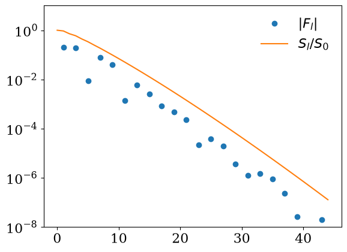
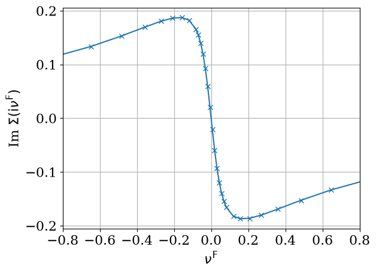
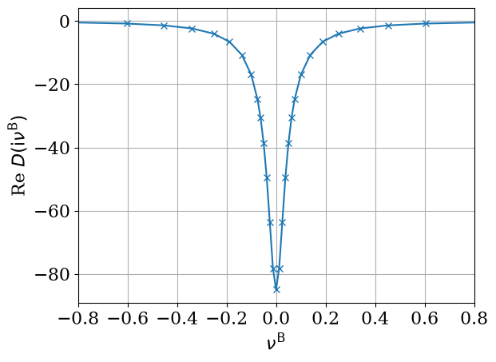
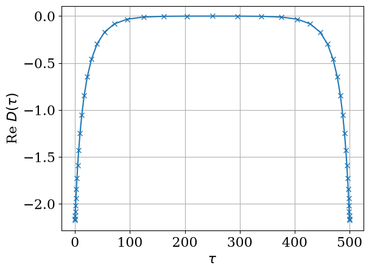
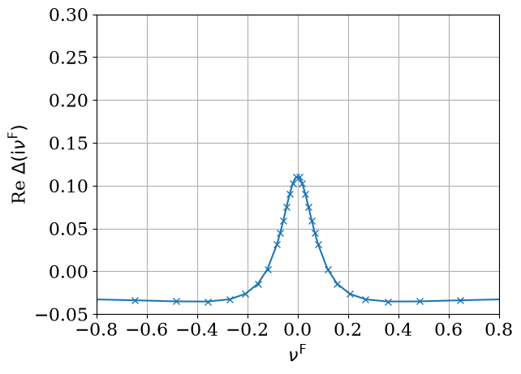
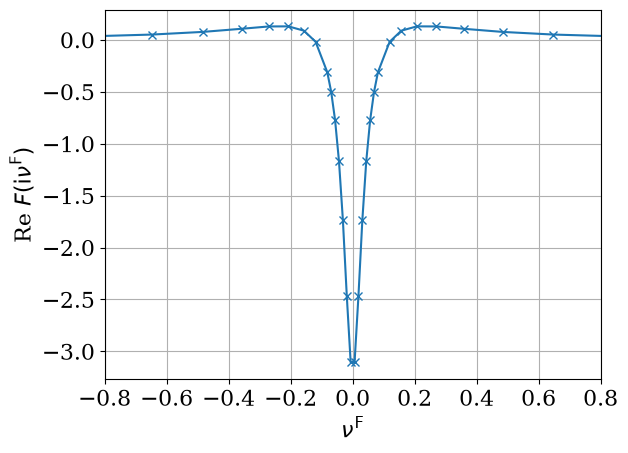
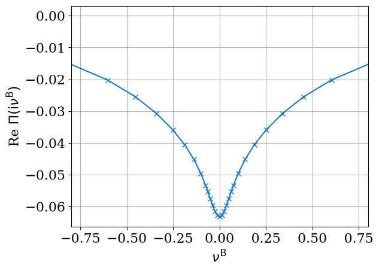
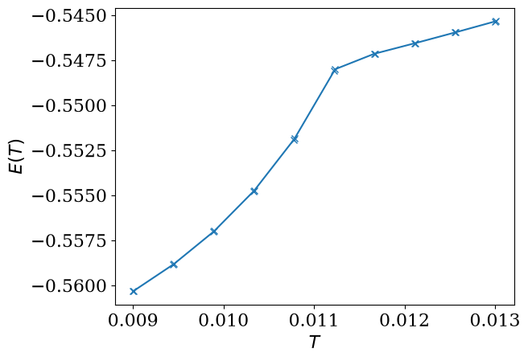
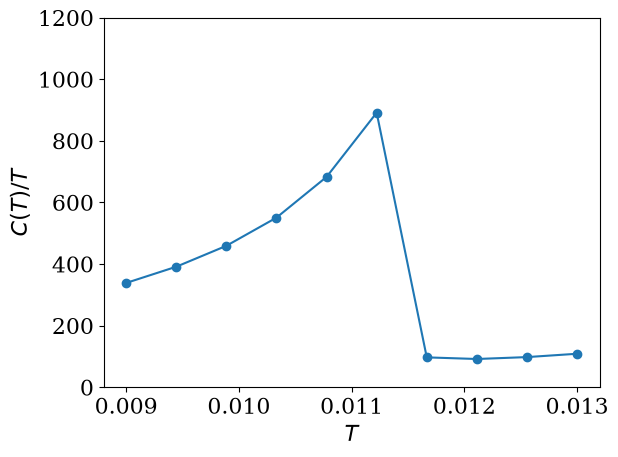

Eliashberg theory for Holstein-Hubbard model#
Author: Shintaro Hoshino and Hiroshi Shinaoka
Equations#
The (multiorbital) Hubbard model coupled to local phonons describes a simplest case where the electrons and phonons are correlated. Such situation can be realized in a molecular-based systems such as fullerides. While the DMFT approach to electron-phonon coupled systems is still technically challenging, the Eliashberg approach [1,2] is a powerful method in the weakly correlated regime and provides an intuitive understanding for the underlying physics.
The single-orbital case is known as a Holstein-Hubbard model whose Hamiltonian is given by
where \(n_i=\sum_{\sigma} n_{i\sigma} = \sum_{\sigma} c^\dagger_{i\sigma} c_{i\sigma}\) is the local number operator, and the colon represents a normal ordering.
We generalize it so as to deal with the three-orbital case relevant to fulleride superconductors (the Jahn-Teller-Hubbard model). The details for the three-orbital model are provided in Ref [3], and here we explain the outline of the approach. We begin with the Hamiltonian \(\mathscr H = \mathscr H_{e} + \mathscr H_{ee} + \mathscr H_p + \mathscr H_{ep}\) where
\(\gamma\) is an orbital index. The \(\eta\) distinguish the types of charge-orbital moments for electrons and vibration modes for phonons, respectively, where \(M=\sum_\gamma 1\), \({\rm Tr}(\boldsymbol{\lambda}^\eta)^2=2\), \(\sum_\eta 1 = \frac{M(M+1)}{2}\). We may use \(M=1\) (single-orbital) or \(M=3\) (three-orbital). For examples, the charge operator is given by \(T_{i,\eta=0} = \sqrt 2 \sum_\sigma n_{i\sigma}\) for \(M=1\) and \(T_{i,\eta=0} = \sqrt{\tfrac 2 3} \sum_\sigma (n_{i1\sigma}+n_{i2\sigma}+n_{i3\sigma})\) for \(M=3\).
We have introduced displacement and momentum operators by \(\phi_{i\eta} = a_{i\eta}+ a_{i\eta}^\dagger\) and \(p_{i\eta} = (a_{i\eta} - a_{i\eta}^\dagger)/{\rm i}\), which satisfy the canonical commutation relation \([\phi_{i\eta},p_{j\eta'}] = 2{\rm i} \delta_{ij} \delta_{\eta\eta'}\). \(\mathscr H_{ee}\) is a compact multipole representation for the Hubbard or Slater-Kanamori interactions [4]. More specifically, \(I_0 = U/4\) for the single-orbital case, and \(I_0 = 3U/4 -J\), \(I_{\eta\neq 0} = J/2\) for the three-orbital case with the Hund’s coupling \(J\) [3].
We assume that there is no \(\eta\)-dependence, i.e., we write \(g_\eta = g_0\) and \(\omega_\eta = \omega_0\). Assuming also that the self-energy is local as in DMFT, we obtain the Eliashberg equations
where the local Green functions are defined by \(G(\tau) = - \langle \mathcal T c_{i\gamma\sigma}(\tau) c^\dagger_{i\gamma\sigma} \rangle\), \(F(\tau) = - \langle \mathcal T c_{i\gamma\uparrow}(\tau) c_{i\gamma\downarrow} \rangle\) for electrons, and \(D(\tau) = - \langle \mathcal T \phi_{i\eta}(\tau) \phi_{i\eta} \rangle\) for phonons. We have simplified the equations using the cubic symmetry. The phase of the superconducting order parameter is fixed as \(\Delta\in \mathbb R\). If we take \(M=1\) and correspondingly \(J=0\), it reproduces the single-orbital Holstein-Hubbard model.
The internal energy may be evaluated through the single-particle Green functions. In a manner similar to Ref. [5], we have the following relations for the fermionic and bosonic Matsubara frequencies \(\nu^{\rm F} = n\pi T\) (odd \(n\)) and \(\nu^{\rm B} = n\pi T\) (even \(n\))
Thus the internal energy \(\langle \mathscr H \rangle = \langle \mathscr H_{e0} + \mathscr H_{ee} + \mathscr H_{p,{\rm kin}} + \mathscr H_{p,{\rm pot}} + \mathscr H_{ep} \rangle\) is obtained. The specific heat is then calculated numerically through differentiating it by temperature.
In addition to the above Eliashberg equations, the Dyson equation completes a closed set of the self-consistent equations. The Green functions are given in the Fourier domain:
for electrons, and
for phonons. We take the semi-circular density of states \(\rho(\varepsilon) = \frac{2}{\pi D^2} \sqrt{D^2-\varepsilon^2}\) for electron parts.
import numpy as np
%matplotlib inline
import matplotlib.pyplot as plt
import sparse_ir
# Get sparse-ir version
try:
from importlib.metadata import version
sparse_ir_version = version('sparse-ir')
except ImportError:
try:
import pkg_resources
sparse_ir_version = pkg_resources.get_distribution('sparse-ir').version
except:
sparse_ir_version = "unknown"
print(f"sparse-ir version: {sparse_ir_version}")
plt.rcParams.update({
"font.family": "serif",
"font.size": 16,
})
sparse-ir version: 2.1.4
from numpy.polynomial.legendre import leggauss
def scale_quad(x, w, xmin, xmax):
""" Scale weights and notes of quadrature to the interval [xmin, xmax] """
assert xmin < xmax
dx = xmax - xmin
w_ = 0.5 * dx * w
x_ = (0.5 * dx) * (x + 1) + xmin
return x_, w_
class Eliashberg:
def __init__(self, bset: sparse_ir.FiniteTempBasisSet, rho_omega, omega_range, U, J, omega0, g, deg_leggauss=100):
assert isinstance(omega_range, tuple)
assert omega_range[0] < omega_range[1]
self.U = U
self.J = J
self.bset = bset
self.beta = bset.beta
self.rho_omega = rho_omega
self.omega0 = omega0
self.g = g
x_, w_ = leggauss(deg_leggauss)
self.quad_rule = scale_quad(x_, w_, omega_range[0], omega_range[1])
self.omega = self.quad_rule[0]
self.omega_coeff = rho_omega(self.omega) * self.quad_rule[1]
# Sparse sampling in Matsubara frequencies
self.iv_f = self.bset.wn_f * (1j * np.pi/self.beta)
self.iv_b = self.bset.wn_b * (1j * np.pi/self.beta)
# Phonon propagator
self.d0_iv = 2 * omega0/(self.iv_b**2 - omega0**2)
def xi_iv(self, mu, sigma_iv):
"""
Compute xi(iv)
"""
return self.iv_f + mu - sigma_iv
def g_f_iv(self, mu, sigma_iv, delta_iv):
"""
Compute G(iv) and F(iv) from sigma(iv), Delta(iv)
"""
xi_iv = self.xi_iv(mu, sigma_iv)
denominator = (xi_iv**2 - delta_iv**2)[:, None] - (self.omega**2)[None, :]
numerator_G = xi_iv[:, None] + self.omega[None, :]
numerator_F = delta_iv[:, None]
g_iv = np.einsum('q,wq->w', self.omega_coeff, numerator_G/denominator,
optimize=True)
f_iv = np.einsum('q,wq->w', self.omega_coeff, numerator_F/denominator,
optimize=True)
return g_iv, f_iv
def pi_tau(self, g_tau, f_tau):
"""
Compute Pi(tau)
"""
return - 4 * (self.g**2) * (g_tau * g_tau[::-1] + f_tau**2)
def d_iv(self, phi_iv):
"""
Compute D(iv)
"""
return 1/(1/self.d0_iv - phi_iv)
def sigma(self, g_tau, d_tau):
"""
Compute Sigma(tau) and Sigma(iv)
"""
sigma_tau = - 4 * (self.g**2) * d_tau * g_tau
sigma_iv = self.to_matsu(sigma_tau, "F")
return sigma_tau, sigma_iv
def delta_iv(self, f_tau, d_tau):
"""
Compute Delta(iv)
"""
tl_delta_tau = (4 * self.g**2) * d_tau * f_tau
tl_delta_iv = self.to_matsu(tl_delta_tau, "F")
return tl_delta_iv + (self.U + 2*self.J) * f_tau[0]
def _smpl_tau(self, stat):
return {"F": self.bset.smpl_tau_f, "B": self.bset.smpl_tau_b}[stat]
def _smpl_wn(self, stat):
return {"F": self.bset.smpl_wn_f, "B": self.bset.smpl_wn_b}[stat]
def to_tau(self, obj_iv, stat):
"""
Transform to tau
"""
return self._smpl_tau(stat).evaluate(self._smpl_wn(stat).fit(obj_iv))
def to_matsu(self, obj_tau, stat):
"""
Transform to Matsubara
"""
return self._smpl_wn(stat).evaluate(self._smpl_tau(stat).fit(obj_tau))
def internal_energy(self, sigma_iv=None, delta_iv=None, g_iv=None, d_iv=None, tau=0.0):
"""
Compute internal energy
"""
stat_sign = {0.0: 1, self.beta: -1}[tau]
smpl_tau0 = [sparse_ir.TauSampling(b, [tau]) for b in [self.bset.basis_f, self.bset.basis_b]]
e1 = stat_sign * smpl_tau0[0].evaluate(self.bset.smpl_wn_f.fit(self.iv_f * g_iv - 1))
e2 = stat_sign * smpl_tau0[0].evaluate(
self.bset.smpl_wn_f.fit(
g_iv * ((self.iv_f - sigma_iv)**2 - delta_iv**2)/(self.iv_f - sigma_iv) - 1
)
)
f2 = self.bset.smpl_tau_b.evaluate(
self.bset.smpl_wn_b.fit(
(self.omega0**-2) * ( (self.iv_b**2) * d_iv - 2 * self.omega0)
)
)
return (3 * (e1 + e2 - self.omega0 * f2))[0]
def solve(elsh, sigma_iv, delta_iv, niter, mixing, verbose=False, ph=False, atol=1e-10):
"""
Solve the self-consistent equation
ph: Force ph symmetry
"""
sigma_iv_prev = None
delta_iv_prev = None
converged = False
for iter in range(niter):
# Update G and F
g_iv, f_iv = elsh.g_f_iv(mu, sigma_iv, delta_iv)
g_tau = elsh.to_tau(g_iv, "F")
f_tau = elsh.to_tau(f_iv, "F")
if ph:
g_tau = 0.5 * (g_tau + g_tau[::-1])
g_tau[g_tau > 0] = 0
# Update Phi
phi_tau = elsh.pi_tau(g_tau, f_tau)
phi_iv = elsh.to_matsu(phi_tau, "B")
phi_iv.imag = 0
# Update D
d_iv = elsh.d_iv(phi_iv)
d_tau = elsh.to_tau(d_iv, "B")
# Update Sigma
sigma_tau, sigma_iv_new = elsh.sigma(g_tau, d_tau)
sigma_iv_prev = sigma_iv.copy()
sigma_iv = (1-mixing) * sigma_iv + mixing * sigma_iv_new
# Update Delta
delta_iv_new = elsh.delta_iv(f_tau, d_tau)
delta_iv_prev = delta_iv.copy()
delta_iv = (1-mixing) * delta_iv + mixing * delta_iv_new
delta_iv.imag = 0.0
delta_iv = 0.5 * (delta_iv + delta_iv[::-1])
diff_sigma = np.abs(sigma_iv_new - sigma_iv_prev).max()
diff_delta = np.abs(delta_iv_new - delta_iv_prev).max()
if verbose and iter % 100 == 0:
print(f"iter= {iter} : diff_sigma= {diff_sigma}, diff_delta={diff_delta}")
#print(max(diff_sigma, diff_delta), atol)
if atol is not None and max(diff_sigma, diff_delta) < atol:
converged = True
break
if not converged:
print("Not converged!")
# Internal energy
u = elsh.internal_energy(
sigma_iv=sigma_iv,
delta_iv=delta_iv,
g_iv=g_iv, d_iv=d_iv,
tau=0.0)
others = {
'sigma_tau': sigma_tau,
'phi_iv': phi_iv,
'g_iv': g_iv,
'f_iv': f_iv,
'd_iv': d_iv,
'd_tau': d_tau,
'f_tau': f_tau,
'g_tau': g_tau,
'u' : u
}
return sigma_iv, delta_iv, others
def add_noise(arr, noise):
"""
Add Gaussian noise to an array
"""
arr += noise*np.random.randn(*arr.shape)
arr += noise*1j*np.random.randn(*arr.shape)
return arr
Self-consistent calculation#
Paramaters#
We now reproduce the results for \(\lambda_0 = 0.125\) shown in Fig. 1 of Ref. [3]. The parameter \(g_0\) is related to \(\lambda_0\) as
(In the code, we drop the suffix 0 for simplicity.) We consider a semicircular density of state with a half bandwidth of \(1/2\), \(T=0.002\), \(U=2\), \(J/U = 0.03\) and half filling.
beta = 500.0
D = 0.5
rho_omega = lambda omega: np.sqrt(D**2 - omega**2) / (0.5 * D**2 * np.pi)
U = 2.0
J = 0.03 * U
omega0 = 0.15
lambda0 = 0.125
mu = 0.0
Setup IR basis#
eps = 1e-7
wmax = 10*D
bset = sparse_ir.FiniteTempBasisSet(beta, wmax, eps)
Solve the equation#
# Number of fermionic sampling frequencies
nw_f = bset.wn_f.size
# Initial guess
noise = 1e-2
sigma_iv0 = add_noise(np.zeros(nw_f, dtype=np.complex128), noise)
delta_iv0 = np.full(nw_f, 1.0, dtype=np.complex128)
max_niter = 10000
mixing = 0.3
deg_leggauss = 100 # Degree of Gauss quadrature for DOS integration
# Construct a solver
g = np.sqrt(3 * lambda0 * omega0/4)
elsh = Eliashberg(bset, rho_omega, (-D,D), U, J, omega0, g, deg_leggauss=deg_leggauss)
# Solve the equation
sigma_iv, delta_iv, others = solve(elsh, sigma_iv0, delta_iv0, max_niter, mixing, verbose=True, ph=True)
# Result
res = {"bset": bset, "sigma_iv": sigma_iv, "delta_iv": delta_iv, **others}
iter= 0 : diff_sigma= 0.04334685173954539, diff_delta=1.999646480967737
iter= 100 : diff_sigma= 2.4519507961506815e-07, diff_delta=5.712867313101277e-07
# Let us check `F` is represented compactly in IR
f_l = bset.smpl_wn_f.fit(res['f_iv'])
plt.semilogy(np.abs(f_l), label=r"$|F_l|$", marker="o", ls="")
plt.semilogy(bset.basis_f.s/bset.basis_f.s[0], label=r"$S_l/S_0$")
plt.ylim([1e-8, 10])
plt.legend(frameon=False)
plt.show()

Plot results#
def plot_res(res):
""" For plotting results """
beta = res["bset"].beta
iv_f = res["bset"].wn_f * (1j*np.pi/beta)
iv_b = res["bset"].wn_b * (1j*np.pi/beta)
plt.plot(iv_f.imag, res['sigma_iv'].imag, marker="x")
plt.xlabel(r"$\nu^\mathrm{F}$")
plt.ylabel(r"Im $\Sigma(\mathrm{i}\nu^\mathrm{F})$")
plt.xlim([-0.8, 0.8])
plt.xticks([-0.8, -0.6, -0.4, -0.2, 0, 0.2, 0.4, 0.6, 0.8])
plt.grid()
plt.show()
plt.plot(iv_b.imag, res['d_iv'].real, marker="x")
plt.xlabel(r"$\nu^\mathrm{B}$")
plt.ylabel(r"Re $D(\mathrm{i}\nu^\mathrm{B})$")
plt.xlim([-0.8, 0.8])
plt.xticks([-0.8, -0.6, -0.4, -0.2, 0, 0.2, 0.4, 0.6, 0.8])
#plt.ylim([-0.1, 0.1])
plt.grid()
plt.show()
plt.plot(bset.tau, res['d_tau'].real, marker="x")
plt.xlabel(r"$\tau$")
plt.ylabel(r"Re $D(\tau)$")
plt.grid()
plt.show()
plt.plot(iv_f.imag, res['delta_iv'].real, marker="x")
plt.xlabel(r"$\nu^\mathrm{F}$")
plt.ylabel(r"Re $\Delta(\mathrm{i}\nu^\mathrm{F})$")
plt.xlim([-0.8, 0.8])
plt.xticks([-0.8, -0.6, -0.4, -0.2, 0, 0.2, 0.4, 0.6, 0.8])
plt.ylim([-0.05, 0.3])
plt.grid()
plt.show()
plt.plot(iv_f.imag, res['f_iv'].real, marker="x")
plt.xlabel(r"$\nu^\mathrm{F}$")
plt.ylabel(r"Re $F(\mathrm{i}\nu^\mathrm{F})$")
plt.xlim([-0.8, 0.8])
plt.xticks([-0.8, -0.6, -0.4, -0.2, 0, 0.2, 0.4, 0.6, 0.8])
plt.grid()
plt.show()
plt.plot(elsh.iv_b.imag, res['phi_iv'].real, marker="x")
plt.xlabel(r"$\nu^\mathrm{B}$")
plt.ylabel(r"Re $\Pi(\mathrm{i}\nu^\mathrm{B})$")
plt.xlim([-0.8, 0.8])
plt.grid()
plt.show()
plot_res(res)






Second calculation on temperature dependence#
We now compute the temperature dependence of the specific heat for \(\lambda_0=0.175\) shown in Fig. 5 of Ref. [1].
lambda0 = 0.175
g = np.sqrt(3 * lambda0 * omega0/4)
We now compute solutions by changing the temperature gradually. To use the same number of IR functions all the temperatures, we fix the UV cutoff \(\Lambda\) to a common value.
res_temp = {}
temps = np.linspace(0.009, 0.013, 10)
# Set Lambda to a large enough value for the lowest temperature
Lambda_common = (10 * D)/temps.min()
# Shift the mesh points by dt, which doubles the mesh size,
# to compute the specific heat
dt = 1e-5
temps_all = np.unique(np.hstack((temps, temps + dt)))
bset = None
sigma_iv0 = None
delta_iv0 = None
for temp in temps_all:
beta = 1/temp
if bset is None:
bset = sparse_ir.FiniteTempBasisSet(beta, Lambda_common/beta, eps)
else:
# Reuse the SVE results
bset = sparse_ir.FiniteTempBasisSet(beta, Lambda_common/beta, eps, sve_result=bset.sve_result)
elsh = Eliashberg(bset, rho_omega, (-D, D), U, J, omega0, g, deg_leggauss=deg_leggauss)
# Initial guess
if sigma_iv0 is None:
noise = 1e-5
sigma_iv0 = add_noise(np.zeros(bset.wn_f.size, dtype=np.complex128), noise)
delta_iv0 = np.full(bset.wn_f.size, 1.0, dtype=np.complex128)
# Solve!
max_iter = 100000
sigma_iv, delta_iv, others = solve(elsh, sigma_iv0, delta_iv0, max_iter, mixing, verbose=False, ph=True, atol=1e-6)
res = {"sigma_iv": sigma_iv, "delta_iv": delta_iv}
for k, v in others.items():
res[k] = v
res_temp[temp] = res
# Use the converged result for an initial guess for the next temperature
sigma_iv0 = res["sigma_iv"].copy()
delta_iv0 = res["delta_iv"].copy()
u_temps = np.array([res_temp[temp]["u"].real for temp in temps_all])
plt.plot(temps_all, u_temps, marker="x")
plt.xlabel(r"$T$")
plt.ylabel(r"$E(T)$")
plt.show()

u_dict = {temp: res_temp[temp]["u"].real for temp in temps_all}
specific_heat = np.array([u_dict[temp+dt] - u_dict[temp] for temp in temps])/dt
plt.plot(temps, specific_heat/temps, marker="o")
plt.ylim([0, 1200])
plt.xlabel(r"$T$")
plt.ylabel(r"$C(T)/T$")
plt.show()

[1] G. M. Eliashberg, Zh. Eksperim. Teor. Fiz. 38, 966 (1960) [Sov. Phys. JETP 11, 696 (1960)].
[2] G. M. Eliashberg, Zh. Eksperim. Teor. Fiz. 43, 1005 (1962) [Sov. Phys. JETP 16, 780 (1963)].
[3] Y. Kaga, P. Werner, and S. Hoshino, Phys. Rev. B 105, 214516 (2022).
[4] S. Iimura, M. Hirayama, and S. Hoshino, Phys. Rev. B 104, L081108 (2021).
[5] Y. Wada, Phys. Rev. 135, A1481 (1964).